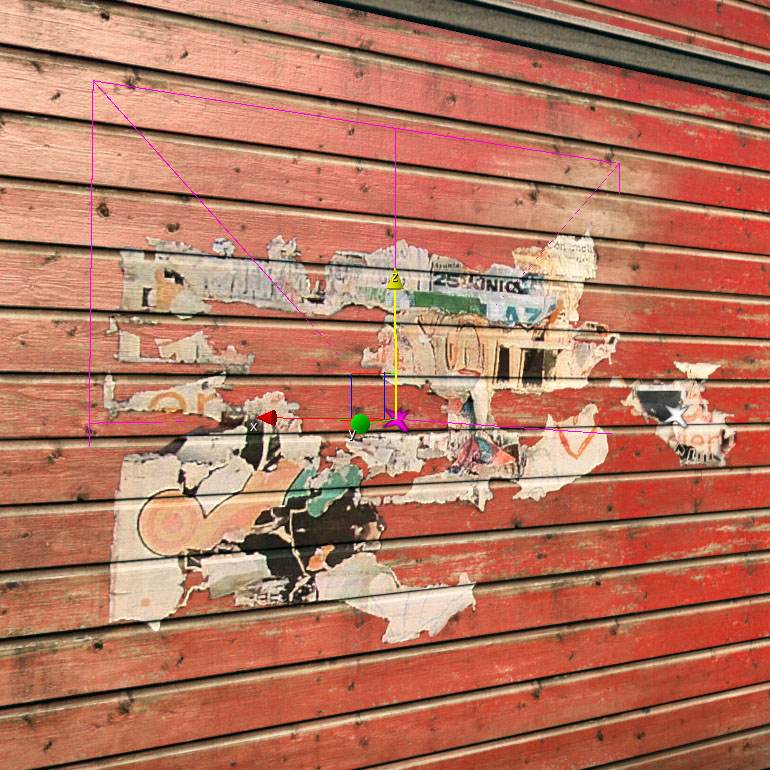
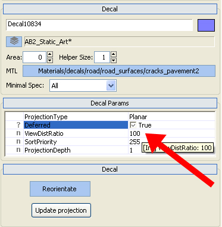
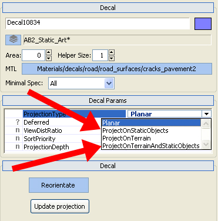
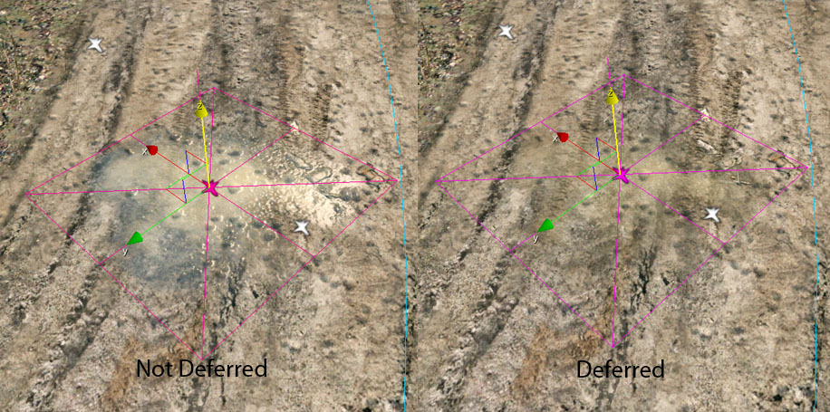
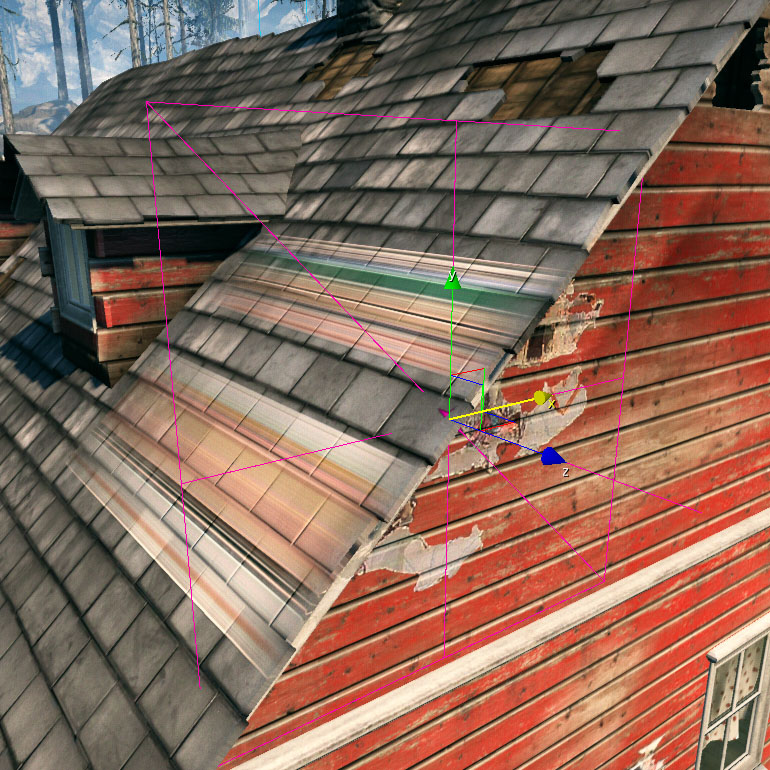
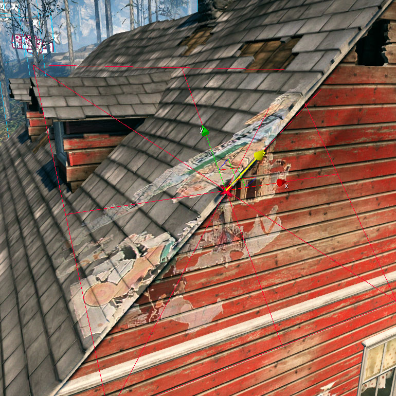
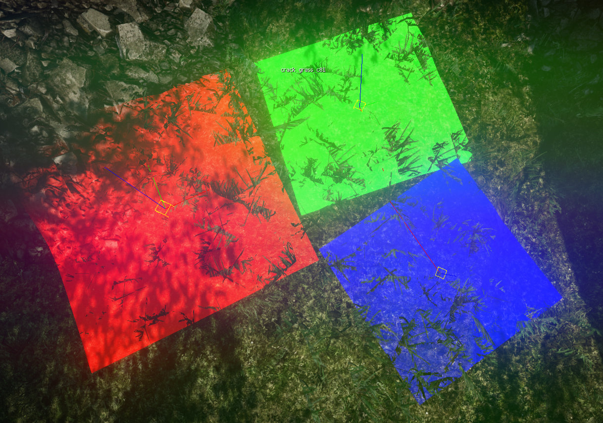

Overview
CryENGINE 3 supports decals with the deferred option. The deferred option is a new projection render type for Decals. It replaces the old Projection Type options "Project on Static Objects" and "Project on Terrain and Static Objects".
Deferred rendering is faster than the old rendering system but still slower than "Planar" Projection Type. That means keep as many Decals as possible in the "Planar" mode, especially if you plan a production for console release.
Setup
First place a decal. Do that by following the instructions of the Decal Tutorial.

There are two ways to get a decal in the deferred mode:
- Set the Deferred flag in the Decal menu list to "True"

- Set the Projection type to "Project on Static Objects" or "Project on Terrain and Static Objects"

Limitations
A new cheaper projection technology like the deferred system always comes with limitations, so that you will have to make some compromises. These compromises are:
Cube maps
Decal materials with cube maps are not supported by the deferred system. 
If you need cube map material like water puddles, place them on areas where it can be projected "planar", or choose the option "Project on Terrain".
Projection angle
If you place a decal on an object face in a 90° angle, it will end up with a stretched texture on this face. 
To avoid this, you have to rotate the decal so that the projection hits any object faces on an angle as low as possible. 
Debug Tool
To enable the debug tool, type r_deferredDecalsDebug 1 into the console command bar.
Any deferred decal in the main viewport will now be rendered in the colors Red, Green and Blue.

The colors show how expensive a deferred decal is for the renderer.
- Red = expensive
- Green = medium
- Blue = cheap
The cost of a deferred decal depends on how many objects it will project, how expensive the geometry is and how many overdraws it will create. Try to place any deferred decals in a way that they will displayed in blue color.